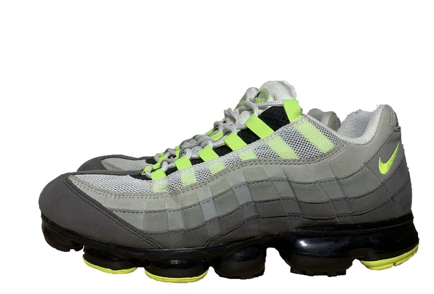
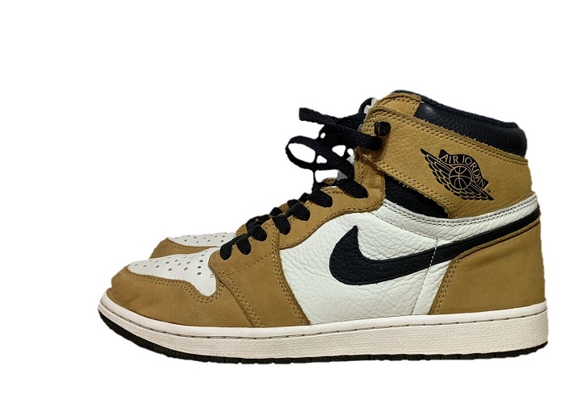
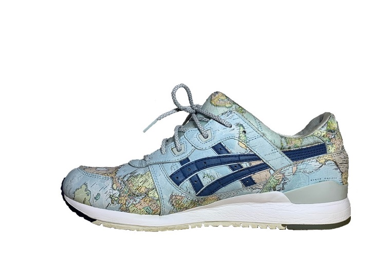

スニーカー紹介
この古びたエアフォース1から紹介するのには理由がある。そう、このエアフォース1こそが私のスニーカー好きの原点であり、最初の靴だからだ。初めてスニーカーを買うにあたって友人から勧められたものだが未だにこの靴を履く頻度が一番高い。17年のこのモデルがアッパーの素材や色の統一感など他の年のモデルに比べて一番シンプルでどんな服にも合わせやすく大好きだ。アスレチックの泥沼から生還して洗ったため生地がかわいそうなかんじになってしまった。
この靴と出会ったときMonster Hunter Worldが発売されたばかりで世間ではいわゆるモンハンブームが巻き起こっていた。かく云う私もモンハンをするためにバイト代を全てプレ4とテレビにつぎ込んでいたわけだが、、、そんな状況の中でこの靴を見かけた私はソールの不思議な模様がモンハンを彷彿とさせ惹きつけられてしまった。
これをみて気がついた方もいるかもしれないが、yeezy350に全体のディテールが似ている。350はとても欲しかったが当然手に入れられるはずもなくプレ値を出す余裕もないというのが本音だが、流行ってるYEEZYを今履くのはダサいという謎理論で見栄をはり、この靴で欲を抑えていた。

AUTHENTIC (Vincent van Gogh) Sunflowers
バンズ特有ののアッパーの低さにより有名絵画の強い主張がほどよく抑えられ、一見するとゴッホの靴ではなく、夏らしいひまわり柄の靴になりかわっている。そして素晴らしいコラボにもかかわらず、手に入れやすい値段設定になっている。私の中では加水分解しないというのも飾れる靴の評価を高める大きな要因の一つだ。

AIR VAPORMAX 95 "NEON"
ヴェイパーマックスのソールと95のアッパーを融合させるという夢のコラボレーションを実現させた一足。しかし、最高と最高をかけ合わせても必ずしも最高にはならないのがスニーカーの面白いところだ。決してこのスニーカーが悪いわけではない。95のオリジナルが凄すぎるだけなのだから。
タブによって着脱を可能にしている点やエアバックの見せ方JADEカラーの使い方など履くと近未来感がでるスニーカーだ。たまたまクラウドファンディングでゲットできたKIXSIXのJADEカラーの靴紐がうまくマッチしているところも好きなところの一つだ。

AIR JORDAN 1 "Rookie of the Year"
この靴は生まれて初めて”並び"に参加して手に入れたものだ。約600人の中から勝ち取ったものでありとても思い入れがある。自分が落ち込んでいたり、なにかの記念だったり勝負の日なんかはこれをはいて気合をいれたりする。最近はだんだんかかとが削れてきてしまった、いずれは履けなくなるぐらいボロボロになると思う。だけどもこの先もaj1は自分にとって特別な一足であることは間違いないだろう。
この靴は友人から誕生日プレゼントとしてもらったものだ。KYRIE 4のソールのギザギザや攻めているデザインが多く元々狙っていたので、サプライズでもらえてとても嬉しかった。この漂うMONSTER感がとても好きだ。これをくれた友人にはリアクトのISPAをプレゼントしたが、最近自分もそれをはきたくて少し困っている。

GEL-LYTE lll "WORLDMAP"
千葉のatmosにいった時にマイサイズが偶然残っていたため慌てて購入した。この靴は海外には必ず持って行って歩き回っている。世界地図というチョイスは斬新で独特だが鮮やか、そしてどこか懐かしさを感じる。使う生地の配置によりすべてが一点物になる。写真の中に日本が入っているので探してみてほしい。
この靴と今までの靴を見比べて違和感を感じた人もいるだろう。ミニマルな物足りなさがとてもいい。次の院内シューズ候補の筆頭だ。
いつもこの靴達が私を外に連れ出してくれる
コメント